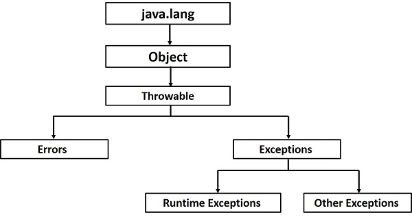

Java 异常处理(exception)
异常(或异常事件)是在执行程序期间出现的问题。 当发生异常时，程序的正常流程被中断并且程序/应用程序异常终止，这是对于用户来说是非常不友好的。因此，要合理地处理这些异常。
发生异常有许多不同的原因，以下是发生异常的一些情况。
- 用户输入了无效数据。
- 找不到需要打开的文件。
- 在通信过程中丢失了网络连接，或者JVM内存不足。
有一些异常是由用户错误引起的，也有一些异常是由程序员错误引起的，或者是由以某种物理资源引起的。
基于这三类异常，您需要了解它们以了解在Java中异常处理工作原理。
- 已检查异常 - 已检查异常是编译器在编译时检查(通知)的异常，这些异常也称为编译时异常。这些异常不能简单地忽略，程序员应该编写代码来处理这些异常。
例如，如果在程序中使用
FileReader类从文件中读取数据，如果其构造函数中指定的文件不存在，则会发生FileNotFoundException异常，并且编译器会提示程序员处理异常。示例代码 -
文件名:FilenotFoundDemo.java
import java.io.File;
import java.io.FileReader;
public class FilenotFoundDemo {
public static void main(String args[]) {
File file = new File("./file.txt");
FileReader fr = new FileReader(file);
}
}
快在右侧实验区使用下方命令执行上面代码，康康会得到什么结果？
cd ~/java && javac FilenotFoundDemo.java
java FilenotFoundDemo
注 - 由于
FileReader类的read()和close()方法抛出IOException，可以看到到编译器通知要求处理IOException以及FileNotFoundException这两个异常。
- 未检查异常 - 未检查的异常是在执行时发生的异常。这些也称为运行时异常。 这些包括编程错误，例如逻辑错误或API的不当使用，编译时忽略运行时异常。
例如，如果在程序中声明了一个大小为
5的数组，但是却要访问数组的第6个元素，则会发生ArrayIndexOutOfBoundsExceptionexception异常。
文件名: UncheckedDemo.java
public class UncheckedDemo {
public static void main(String args[]) {
int num[] = {1, 2, 3, 4};
System.out.println(num[5]);// 访问第6个元素
}
}
cd ~/java && javac UncheckedDemo.java
java UncheckedDemo
康康
- 错误** - 这个严格来说不是异常，它是超出用户或程序员控制的问题。 代码中通常会忽略错误，因为很少对错误做任何事情。 例如，如果发生堆栈溢出，则会出现错误。 它们在编译时也被忽略。
异常层次结构
所有异常类都是java.lang.Exception类的子类型。 Exception类是Throwable类的子类。 除了Exception类之外，还有另一个名称为Error的子类，它派生自Throwable类。
错误是在严重故障的情况下发生的异常情况，Java程序不处理这些情况。 生成错误以指示运行时环境生成的错误。例如：JVM内存不足。 通常，程序无法从错误中恢复。
Exception类有两个主要的子类：IOException类和RuntimeException类。

异常方法
以下是Throwable类中可用的方法列表。
| 编号 | 方法 | 异常 |
|---|---|---|
| 1 | public String getMessage() |
返回有关已发生的异常的详细消息，此消息在Throwable构造函数中初始化。 |
| 2 | public Throwable getCause() |
返回由Throwable对象表示的异常的原因。 |
| 3 | public String toString() |
返回与getMessage()结果连接的类名称。 |
| 4 | public void printStackTrace() |
将toString()的结果与堆栈跟踪一起打印到System.err(错误输出流)。 |
| 5 | public StackTraceElement [] getStackTrace() |
返回包含堆栈跟踪上每个元素的数组。 索引0处的元素表示调用堆栈的顶部，而数组中的最后一个元素表示调用堆栈底部的方法。 |
| 6 | public Throwable fillInStackTrace() |
使用当前堆栈跟踪填充此Throwable对象的堆栈跟踪，添加堆栈跟踪中的任何先前信息。 |
捕捉异常
在方法中可使用try和catch关键字的组合捕获异常。try/catch块放在可能生成异常的代码周围。try/catch块中的代码称为受保护代码，使用try/catch的语法如下所示 -
语法
try {
// Protected code
} catch (ExceptionName e1) {
// Catch block
}
将容易出现异常的代码放在try块中。 发生异常时，异常由与其关联的catch块处理。 每个try块都应该紧跟一个catch块或者一个块finally。
catch语句涉及声明尝试捕获的异常类型。 如果受保护代码中发生异常，则会检查try之后的catch块(或多个块)。如果发生的异常类型列在catch块中，则异常将传递给catch块，就像将参数传递给方法参数一样。
示例
以下是使用2个元素声明的数组，然后尝试访问引发异常的数组的第3个元素。
文件名:ExcepTest.java
import java.io.*;
public class ExcepTest {
public static void main(String args[]) {
try {
int a[] = new int[2];
System.out.println("Access element three :" + a[3]);
} catch (ArrayIndexOutOfBoundsException e) {
System.out.println("Exception thrown :" + e);
}
System.out.println("Out of the block");
}
}
cd ~/java && javac ExcepTest.java
java ExcepTest
康康
多个try块
try块后面可以跟多个catch块，多个catch块的语法如下所示 -
语法
try {
// Protected code
} catch (ExceptionType1 e1) {
// Catch block
} catch (ExceptionType2 e2) {
// Catch block
} catch (ExceptionType3 e3) {
// Catch block
}
上面的语句中放置了三个catch块，但只需一次尝试即可获得任意数量的块。 如果受保护代码中发生异常，则会将异常抛出到列表中的第一个catch块。 如果抛出的异常的数据类型与ExceptionType1匹配，则会在那里捕获它。 如果不是，则异常传递给第二个catch语句。 这种情况一直持续到异常被捕获，在这种情况下，当前方法停止执行，异常将被抛到调用堆栈上的前一个方法。
示例
以下是显示如何使用多个try/catch语句的代码段。
try {
file = new FileInputStream(fileName);
x = (byte) file.read();
} catch (IOException i) {
i.printStackTrace();
return -1;
} catch (FileNotFoundException f) // Not valid! {
f.printStackTrace();
return -1;
}
捕获多种类型的例外
从Java 7开始，可以使用单个catch块处理多个异常，此功能简化了代码。 下面是应用示例 -
catch (IOException|FileNotFoundException ex) {
logger.log(ex);
throw ex;
throws/throw关键字
如果方法不处理已检查的异常，则该方法必须使用throws关键字声明它。 throws关键字应放置在方法签名的末尾。
可以使用throw关键字抛出异常，可以是新实例化的异常，也可以是刚捕获的异常。
throws和throw关键字之间的区别是，throws用于推迟对已检查异常的处理，throw用于显式调用异常。
以下方法声明它抛出RemoteException -
import java.io.*;
public class className {
public void deposit(double amount) throws RemoteException {
// Method implementation
throw new RemoteException();
}
// Remainder of class definition
}
可以将方法声明为抛出多个异常，在这种情况下，异常在以逗号分隔的列表中声明。 例如，以下方法声明它抛出RemoteException和InsufficientFundsException异常 -
import java.io.*;
public class className {
public void withdraw(double amount) throws RemoteException,
InsufficientFundsException {
// Method implementation
}
// Remainder of class definition
}
finally块
finally块在try块或catch块之后。无论受保护的代码块是否发生异常，最终都会执行finally块中的代码。
使用finally块运行要执行的任何清理类型语句，无论受保护代码中发生什么。
finally块放置在catch块的末尾，它的语法语法如下 -
try {
// Protected code
} catch (ExceptionType1 e1) {
// Catch block
} catch (ExceptionType2 e2) {
// Catch block
} catch (ExceptionType3 e3) {
// Catch block
}finally {
// The finally block always executes.
}
示例
文件名:ExcepTest1.java
public class ExcepTest1 {
public static void main(String args[]) {
int a[] = new int[2];
try {
System.out.println("Access element three :" + a[3]);
} catch (ArrayIndexOutOfBoundsException e) {
System.out.println("Exception thrown :" + e);
}finally {
a[0] = 6;
System.out.println("First element value: " + a[0]);
System.out.println("The finally statement is executed");
}
}
}
cd ~/java && javac ExcepTest1.java
java ExcepTest1
康康
使用finally时，需要注意以下规则 -
- 没有
try语句就不能存在catch子句。 - 只要存在
try/catch块，finally子句就不是必须的。 - 如果没有
catch子句或finally子句，则try块不能出现。 try，catch，finally块之间不能出现任何代码。
try-with-resources
通常，当使用流，连接等任何资源时，要使用finally块显式关闭它们。 在下面的程序中使用FileReader从文件中读取数据，然后使用finally块关闭它。
文件名:ReadDataDemo.java
import java.io.File;
import java.io.FileReader;
import java.io.IOException;
public class ReadDataDemo {
public static void main(String args[]) {
FileReader fr = null;
try {
File file = new File("file.txt");
fr = new FileReader(file); char [] a = new char[50];
fr.read(a); // reads the content to the array
for(char c : a)
System.out.print(c); // prints the characters one by one
} catch (IOException e) {
e.printStackTrace();
}finally {
try {
fr.close();
} catch (IOException ex) {
ex.printStackTrace();
}
}
}
}
cd ~/java && javac ReadDataDemo.java
java ReadDataDemo
康康
try-with-resources，也称为自动资源管理，是Java 7中引入的一种新的异常处理机制，它自动关闭try/catch块中使用的资源。
要使用此语句，只需在括号内声明所需的资源，创建的资源将在块结束时自动关闭。 以下是try-with-resources语句的语法。
语法
try(FileReader fr = new FileReader("file path")) {
// use the resource
} catch () {
// body of catch
}
}
以下是使用try-with-resources语句读取文件中数据的程序。
文件名:TryWithDemo.java
import java.io.FileReader;
import java.io.IOException;
public class TryWithDemo {
public static void main(String args[]) {
try(FileReader fr = new FileReader("E://file.txt")) {
char [] a = new char[50];
fr.read(a); // reads the contentto the array
for(char c : a)
System.out.print(c); // prints the characters one by one
} catch (IOException e) {
e.printStackTrace();
}
}
}
cd ~/java && javac TryWithDemo.java
java TryWithDemo
康康
在使用try-with-resources语句时，请牢记以下几点。
- 要使用带有
try-with-resources语句的类，它应该实现AutoCloseable接口，并且它的close()方法在运行时自动调用。 - 可以在
try-with-resources语句中声明多个类。 - 当在
try-with-resources语句的try块中声明多个类时，这些类将以相反的顺序关闭。 - 除括号内的资源声明外，其它都与
try块的普通try/catch块相同。 try中声明的资源在try-block开始之前实例化。- 在
try块声明的资源被隐式声明为final。
用户定义的异常
可以在Java中创建自己的异常。 在编写自己的异常类时，请注意以下几点 -
- 所有异常必须是
Throwable的子类。 - 如果要编写由处理或声明规则自动强制执行的已检查异常，则需要扩展
Exception类。 - 如果要编写运行时异常，则需要扩展
RuntimeException类。
可以定义自己的Exception类，如下所示 -
class MyException extends Exception {
}
只需要扩展预定义的Exception类来创建自己的Exception类。 这些都是经过检查的异常。 以下InsufficientFundsException类是一个用户定义的异常，它扩展了Exception类，使其成为一个已检查的异常。异常类与任何其他类一样，包含有用的字段和方法。
示例
文件名:InsufficientFundsException.java
import java.io.*;
public class InsufficientFundsException extends Exception {
private double amount;
public InsufficientFundsException(double amount) {
this.amount = amount;
}
public double getAmount() {
return amount;
}
}
为了演示如何使用用户定义的异常，以下CheckingAccount类的withdraw()方法中包含抛出InsufficientFundsException。
文件名:CheckingAccount.java
import java.io.*;
public class CheckingAccount {
private double balance;
private int number;
public CheckingAccount(int number) {
this.number = number;
}
public void deposit(double amount) {
balance += amount;
}
public void withdraw(double amount) throws InsufficientFundsException {
if(amount <= balance) {
balance -= amount;
}else {
double needs = amount - balance;
throw new InsufficientFundsException(needs);
}
}
public double getBalance() {
return balance;
}
public int getNumber() {
return number;
}
}
以下BankDemo程序演示了如何调用CheckingAccount类的deposit()和withdraw()方法。
文件名:BankDemo.java
public class BankDemo {
public static void main(String [] args) {
CheckingAccount c = new CheckingAccount(101);
System.out.println("Depositing $500...");
c.deposit(500.00);
try {
System.out.println("\nWithdrawing $100...");
c.withdraw(100.00);
System.out.println("\nWithdrawing $600...");
c.withdraw(600.00);
} catch (InsufficientFundsException e) {
System.out.println("Sorry, but you are short $" + e.getAmount());
e.printStackTrace();
}
}
}
快在右侧实验区使用下方命令执行上面代码，康康会得到什么结果？
cd ~/java && javac InsufficientFundsException.java
cd ~/java && javac CheckingAccount.java
cd ~/java && javac BankDemo.java
java BankDemo
常见异常
在Java中，可以定义两个分类:异常和错误。
- JVM异常 - 这些是JVM独占或逻辑抛出的异常/错误。 示例：
NullPointerException，ArrayIndexOutOfBoundsException，ClassCastException。 - 程序化异常 - 应用程序或API程序员明确抛出这些异常。 示例：
IllegalArgumentException，IllegalStateException。